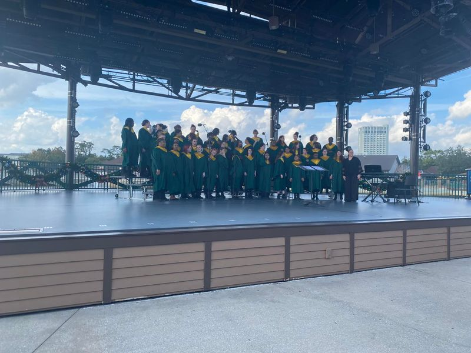

Mobile uploads
THE OTHER SIDE OF AKRON PUBLIC SCHOOLS
I’m riding on a bus right now returning from a truly magical trip to Disney World.
Firestone High School organized a 4 day trip for the choir, band and orchestra.
The picture here is the performance the choir did at Disney Springs. And the band and orchestra participated in a studio recording session.
My son is a senior at Firestone. He plays in the orchestra. I got to go on this trip as a chaperone.
I see myself as a reformer of systems. Our systems so often become more concerned with protecting themselves than doing the work they were originally created to do. This truth of systems leads to corruption, fear and disease.
I find it difficult to see much to reform at Firestone.
I can only speak about the choir, band and orchestra. But these teachers clearly go above and beyond.
Last year they put on Sunday in the Park with George. A really ambitious production that they did wonderfully. And this year they were the first high school in America to perform The Prom. They didn’t need to take risks and challenges like that. But they did.
And then this trip. It’s 80 students, a bunch of chaperones and 2 buses. They didn’t need to do this.
There is something truly idealistic about a teacher and a school. They genuinely care. I wonder if Akron Public Schools has gotten so raked over the coals with their low test scores and rankings that they just said, “Screw it. We’re just going to do the best job we can do and let things fall where they fall.”
And then there are the students. The amount of love they have for each other is greater than any connection I have seen before. And it crosses economic and racial lines.
I see White kids hugging Black kids and Black kids hugging Jewish kids. It also crosses gender lines. It feels like they understand the pain of the world and they are there to love and support each other.
I can’t tell you how many times they told me, “We genuinely love each other.” It’s just so beautiful.
Are there some mean kids? Sure. But they are a very small force that has very little energy.
You can hear the same painful stories of divorced families, abuse and alcoholism that we had when I was in high school. But what is different in this generation is the openness and acceptance these people get from fellow students.
There is just so much love on these buses. It’s beautiful.
I feel like Firestone has created a culture of love. And you can see it everywhere.
Place: Disney Springs (28.371, -81.518)
Address: Orlando, FL